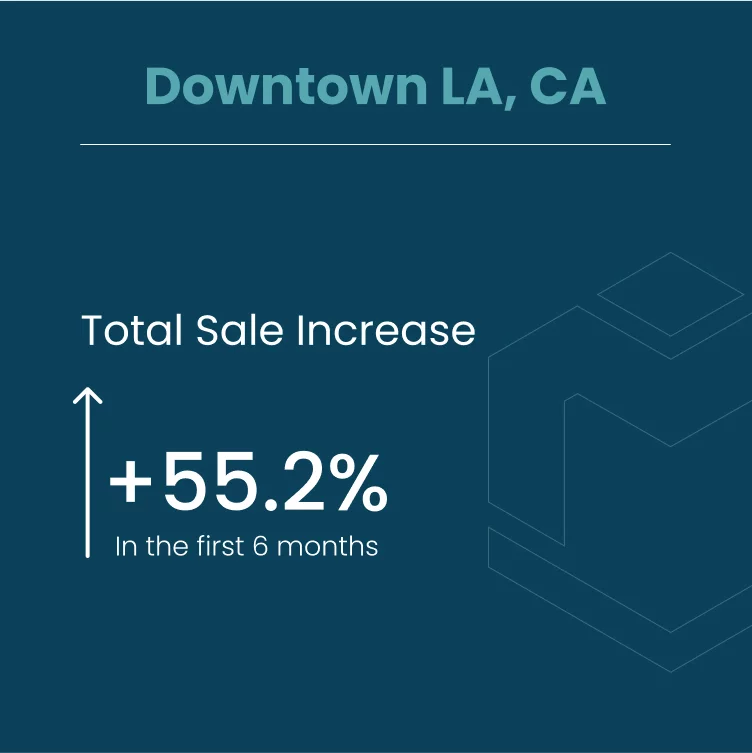
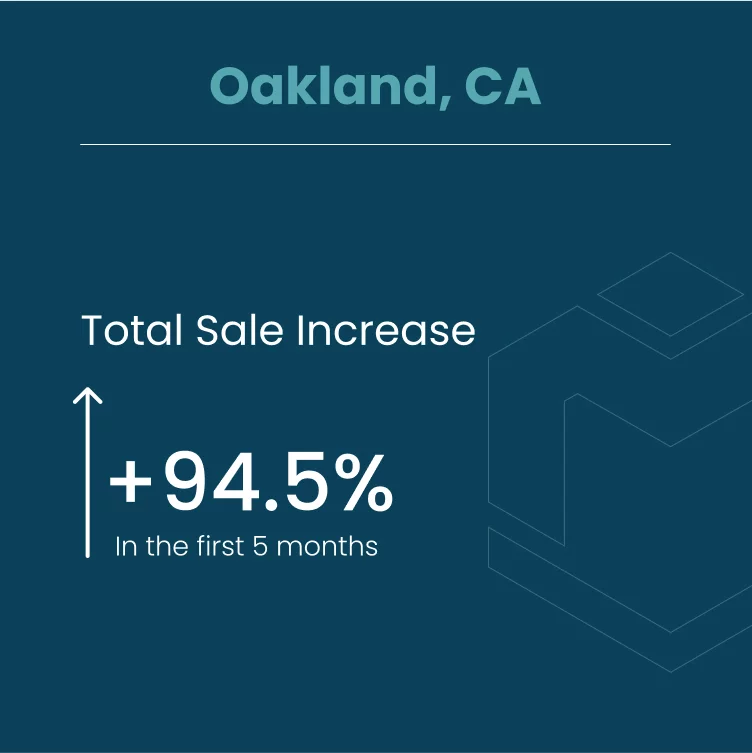
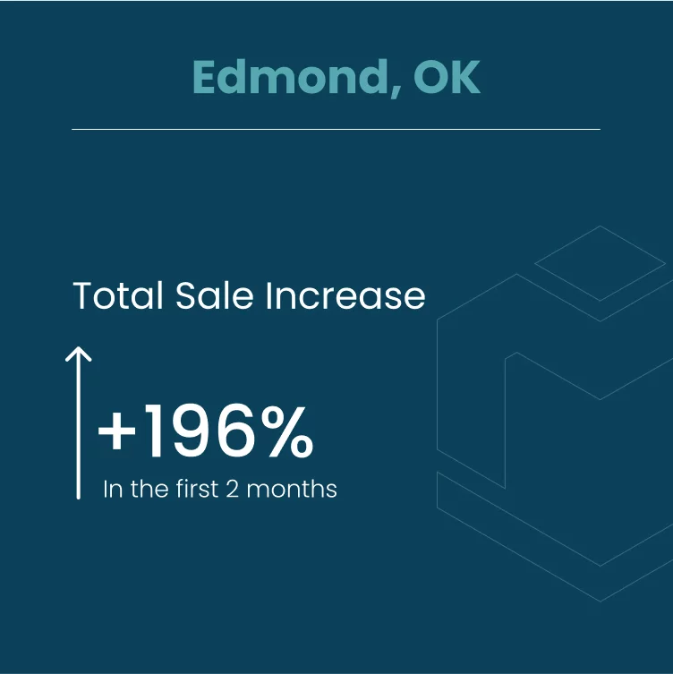
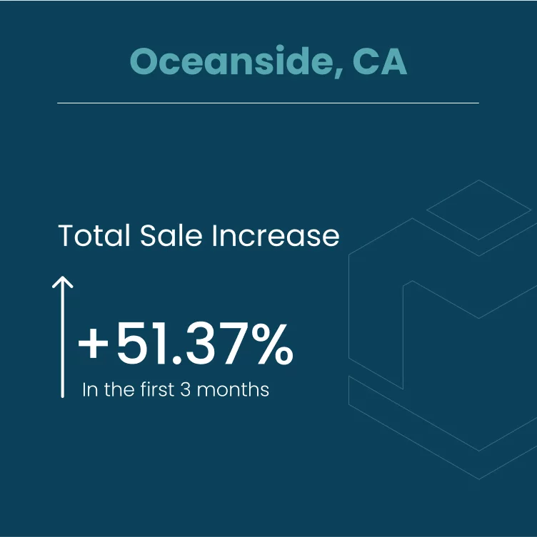

Urgent care runs on volume. So does our track record, measured across the whole agency before we ever look at your center.
500+Locations helped
2.1BLNWebsite visits
1.2BLNSales influence
12 years in business98% success rateThousands of companies served
The 2 KPIs that rule them all
Everything online reduces to two numbers.
A patient with the flu or a fresh cut picks a clinic fast, on a phone, from whatever Google shows first. So we measure only what decides that pick: how quickly your page shows up and how much of the local map carries your name.
KPI 01 · Speed
FCPFirst Contentful Paint
The gap between a tap on your listing and the first thing a patient sees. 85% of traffic globally is from a mobile device, and someone holding a cut that needs stitches will not stare at a blank screen for long.
Where a search becomes a walk-in: pages we build on SGEN CMS paint in 0.9s on desktop, against 7.8s on a slow competitor site we measured.
KPI 02 · Visibility
SoLVShare of Local Visibility
Whether your center sits in Google's local top-3 from every block you draw patients from, for "urgent care near me," "walk-in clinic for flu," and "stitches for a cut." Hold more of that map and you are the clinic people walk into.
Take the first spot in the local pack and you win 18% of clicks. Slip below the top-3 and your share drops under 1%.
KPI 01 · First Contentful Paint
Nobody with a deep cut waits for a slow page.
A parent searches "stitches for a cut," taps the first clinic, and gets a white screen. They tap back and choose the next center on the list. Here is that tap on a slow competitor site we measured, side by side with a site we build.
A slow competitor siteToo slow
A real competitor site we measured. One site, not an average.
7.8sFirst Contentful Paint
On screen before the patient taps backNo
A site we build on SGEN CMSBuilt for speed
Built on SGEN CMS for First Contentful Paint, so your hours and directions are up before a hurting patient taps back.
0.9sdesktop
On screen before the patient taps backYes
Inside Google's 1.8s mark for a good FCPYes
FCP = bounce rate85% of traffic globally is from a mobile device. Each extra second hands walk-ins to the next clinic.
3 seconds+20%
4 seconds+40%
5 seconds+60%
KPI 02 · Share of Local Visibility
Where your center shows up, block by block.
A Local Radius Scan lays a grid of search points over the neighborhoods around your center and records your rank for "urgent care near me" at each one. Every red pin is a street where a sick patient finds someone else. The scans below illustrate what a before and after looks like.
Before MediMarketingInvisible
Scanning: "urgent care near me"
141191612187101315812291720116141913391511
SoLVLowMostly outside the top 3Illustration, not a client scan
After MediMarketingTop-3
Scanning: "urgent care near me"
2132412132311242321452415
SoLVHighMostly inside the top 3Illustration, not a client scan
Why only the top-3 counts
Click share by position in the local pack.
18%Position 1
15%Position 2
13%Position 3
<1%Position 4 to 100
Outside the top-3, a walk-in never finds you. The local pack is where a parent with a child down with the flu makes the choice.
99,000Google local searches / second
84% of local searches are discovery searches. People type "walk-in clinic for flu," not the name of your center, so the top of that list decides the visit.
Impact from Google
The same playbook, dollarized.
The same moment keeps showing up on our clients' Google Business Profile dashboards: the flat line, then the spike where we applied our strategy. Here is what that looks like in views, actions, and revenue.
Flagship case · NuLeaf
From a steady plateau to a vertical climb.
$300K/mo→$2.5M/mo
Grown over 30 months: 1.28M profile views per month and 77,200 customer actions in 90 days. Views became actions, actions became revenue.
This is where we applied our strategy
1.09MProfile views / quarter · 29.1K actions
593KProfile views · 11.6K actions
390KProfile views · 8.98K actions
197KProfile views · 5.04K actions
Client results · by location




Results shown are from clients across our agency group. The growth curve is an illustration of its shape, not plotted data.
Websites built to sell
Sites we build for medical & dental practices, built to rank AND sell.
An urgent care site has one job: move a patient from the search result to your front door. We build for First Contentful Paint first, then place hours, directions, reserve-a-time and tap-to-call where a thumb lands.
These are illustrations of the sites we build, not client sites.
yourpractice.com
Walk-in & same-day care
Sick or hurt? Walk in today or reserve a time.
Flu tests, stitches, sprains and X-rays, with no appointment needed.
Reserve your time
What we treat todaySee all
FluToday
StitchesToday
SprainsToday
X-raysToday
Urgent care site, built for the walk-in
Hours, the conditions treated today and a reserve button above the fold, the service-site pattern a Marketing Plus build follows. A capability illustration.
yourpractice.com/reserve
Reserve online
Reserve a time before you leave home.
Pick a time, tell us what happened, and come in at the time you chose.
Cut that may need stitches · Today, 6:15 PM
Nearest location · Open now
Reserve my time
Reserve-a-time flow
The path from a "walk-in clinic for flu" search to a reserved visit time. A capability illustration.
Also the kind of sites we build on the same stack
yourdentalpractice.com
Dentistry for every age
Your next cleaning, booked tonight.
Checkups, whitening and crowns in a calm, modern office.
Book a cleaning
First visit + X-raysMost dental plans accepted
Evening hours
Dental practice site
A warm build where every page ends at the booking calendar. A capability illustration.
yourmedspa.com
Skin, face & body
Refreshed, and still recognizably you.
Injectables, peels and laser, with a plan from a licensed provider.
Book a consult
Treatment plans priced up frontLicensed injectors on staff
Consults online
Med spa site
Blush and charcoal, with each treatment page closing on a consult. A capability illustration.
yourclinic.com
Primary care for all ages
One doctor for the whole family.
Physicals, chronic-care visits and lab work, with results in the portal.
Book a visit
Annual physical + labsResults and refills in the portal
New patients welcome
Primary care clinic site
Clean blue and white, built around booking a yearly physical. A capability illustration.
Certified partners
Google Partner · Meta Marketing Partner · TikTok Marketing Partner · CXL Certified Optimizer. The platforms your patients live on, run by certified hands.
What makes us different
We guarantee results, and we build our own software to ensure it.
In our study of competing firms, each one was software only or agency only. We built our own platform and run it with our own team, because an urgent care site that loads like a waiting room loses the visit.
SGEN CMSThe platform your center's pages run on, built by us so they paint in under a second on desktop.
AI SEO Website OptimizerWorks on your Share of Local Visibility for the walk-in searches around each location.
AI Google Ads OptimizerCatches same-day searchers with paid ads once your map rank and your site are ready (Pro add-on).
Site, local search and (on Pro) ads sit with one team on one platform, across every location you run.
We map your Share of Local Visibility with Local Radius Scans around each center, then work it with urgent care local SEO and a fully built-out Google Business Profile. The site rebuild fixes First Contentful Paint, so a patient searching from the car sees your hours instead of a blank page and does not leave before it loads. The whole engine is laid out in the 2-KPI method. SoLV Top-3 is one of our three guarantees.
Yes. People search for the problem in front of them, so we build your service pages and service key phrases around the needs they actually type. Every one of those pages is built for First Contentful Paint. You decide the route: we rebuild your site on SGEN CMS, or move the one you have onto it.
Yes. Pricing is set per location, and each center is measured on its own service radius, so you can see which sites hold the map and which are losing walk-ins to the clinic across town. One center or a network of centers, the same two numbers decide the result.
Marketing Plus covers the service site and local SEO, the base every center builds on to win "urgent care near me." Pro adds a product and service site and product key phrases, Creative Plus, semi-exclusivity in your market, and access to the Google Ads add-on. We will be honest about ads: they only pay off once you rank and your site sells, otherwise you blow money. Book an audit and we will tell you which fits your centers.
We hold ourselves to First Contentful Paint and Share of Local Visibility every month, for each of your centers. New Patients Guaranteed sits alongside our other two guarantees, SoLV Top-3 Guaranteed and We Guarantee Booked Appointments. It starts with a free audit of your center, so you see exactly where you stand first. See how the method works.
Public pricing
Transparent pricing. No hidden quotes.
Build-and-abandon vendors hide the price until the call. We put it in the open.
Marketing Plus
Starting from$750/mo
+ per location
Service site plus local SEO for an urgent care center.
Web Plus: site rebuild on SGEN CMS for First Contentful Paint
SEO Plus: urgent care local SEO and Google Business Profile
AI SEO Website Optimizer for Share of Local Visibility
Reported in the openFree practice auditBacked by the New Patients Guarantee
The 2 KPIs are the foundation of urgent care online success
Let's fill your exam rooms with walk-in patients.
Book a free growth audit. We will scan the map around your center for "urgent care near me," time your pages on a phone, and show you which walk-ins are going to other urgent care centers today.